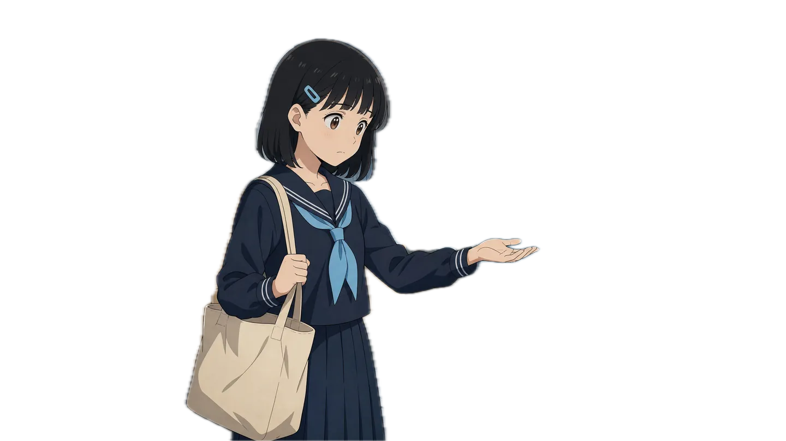

1 分镜显影
2 景深夹层
3 提示词碎成画面
第 01 章 · 分镜
分镜一格格，
显影成电影。
镜 01
镜 02
镜 03
小样 1 · 分镜显影 — 铅笔线稿 → 显影上色 → 动起来
↺ 重播
↓ 小样 2
开拍

这部短片，
从剧本到成片都在这里拍。
剧本、画面、声音、镜头——每一步接的都是不同的模型。
小样 2 · 景深夹层 — 背景视频 / 标题 / 抠出的人物 / 雨，四层不同速度；进场先对焦标题，再拉焦到人物
↺ 重播
↓ 小样 3
第 02 章 · 画面
你写下的每个字，
都会变成画面。
prompt · 梅雨季的放学路，他把伞往她那边偏，自己右肩淋湿。赛璐璐 2D 动画。
小样 3 · 提示词碎成画面 — 文字颗粒飞散，重组成它生成的图，再动起来
↺ 重播
END
 镜 01
镜 01 镜 02
镜 02 镜 03镜 01镜 02镜 03
镜 03镜 01镜 02镜 03